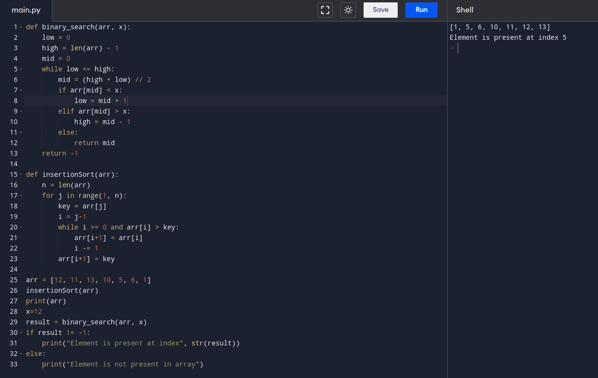

Binary Search Iterative
def binary_search(arr, x):
low = 0
high = len(arr) - 1
mid = 0
while low <= high:
mid = (high + low) // 2
if arr[mid] < x:
low = mid + 1
elif arr[mid] > x:
high = mid - 1
else:
return mid
return -1
def insertionSort(arr):
n = len(arr)
for j in range(1, n):
key = arr[j]
i = j-1
while i >= 0 and arr[i] > key:
arr[i+1] = arr[i]
i -= 1
arr[i+1] = key
arr = [12, 11, 13, 10, 5, 6, 1]
insertionSort(arr)
print(arr)
x=12
result = binary_search(arr, x)
if result != -1:
print("Element is present at index", str(result))
else:
print("Element is not present in array")

back